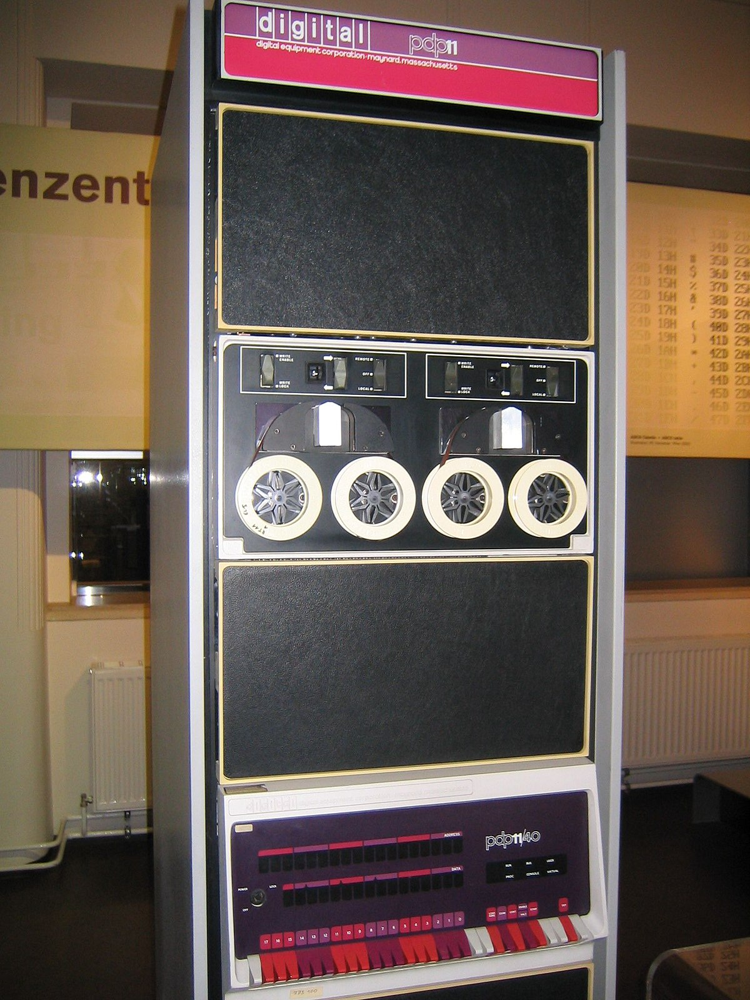

Unix a fost dezvoltat la Bell Labs la începutul anilor 1970 pentru a oferi un sistem simplu, portabil și eficient pentru cercetare și usabilitate. A fost creat inițial pe hardware DEC (PDP-11) și a fost portat rapid pe alte platforme datorită limbajului C.
De ce a contat această eră?
A introdus principiile de design: simplitate, small tools, composability.
Portabilitatea prin C a făcut Unix un model replicabil pentru alte sisteme.
A influențat dezvoltarea rețelelor și a mediilor multi-user în mediul academic și industrial.
Exemple și tehnologii reprezentative
PDP-11 — platforma pe care multe versiuni Unix au fost dezvoltate.
AT&T/Bell Labs Unix — primele implementări și distribuții interne.
Utilitare Unix (grep, sed, awk) — instrumente mici, combinate în scripturi pentru fluxuri de lucru complexe.
Impact și moștenire
Unix a oferit baza concepțională pentru multe SO moderne: modelul de procese, fișiere ca obiecte, pipe-uri pentru comunicare și filozofia modulară. Linux, macOS și multe instrumente moderne provin direct din ideile Unix.
Media și resurse vizuale
Ken Thompson și Dennis Ritchie — autorii Unix (Sursa: Wikimedia Commons)

Mini-calculatorul DEC PDP-11, platformă uzuală pentru Unix timpurii (Sursa: Wikimedia Commons)
Prelegere/documentar: Istoria Unix — introducere la filozofia și portabilitate (YouTube/Computer History sources)
Caracteristici
Scris în C — a facilitat portabilitatea între arhitecturi.
Portabilitate — codul putea fi adaptat ușor pentru mai multe platforme.
Multi-user și multitasking — suport pentru mai mulți utilizatori și execuție simultană de procese.
Impact
Unix a oferit principii de proiectare (simplicity, small tools, composability) care au stat la baza multor sisteme moderne, inclusiv Linux și macOS.